Which commanders win most often on your budget?
64 popular commanders, each built as a budget deck per price class (€100, €200, €300, €400 and €500) and continuously tested against each other in Forge. For every deck: decklist, statistics from the games and a Cardmarket shopping list.
- 16,732 games
- 105 tournaments
- 320 decks tested
Latest tournament: . The site updates automatically after every tournament.
Rankings
The most successful decks up to €100 in the Forge simulation (Bracket 3: at most 3 Game Changers).
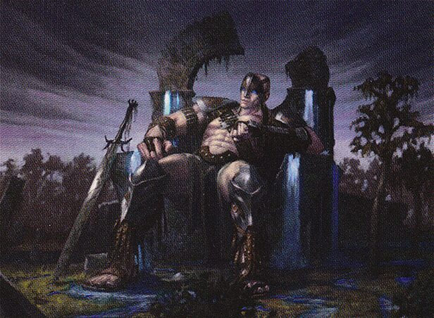
Illustration: Eric Deschamps · © Wizards of the CoastOloro, Ageless Ascetic
 Illustration: Kai Carpenter · © Wizards of the Coast
Illustration: Kai Carpenter · © Wizards of the CoastGiada, Font of Hope
 Illustration: Joshua Raphael · © Wizards of the Coast
Illustration: Joshua Raphael · © Wizards of the CoastKuja, Genome Sorcerer
Rankings up to €100
from 32 tournaments| # | Commander | Elo | Win rate | Games | Price | Status |
|---|---|---|---|---|---|---|
| 1 | 1819 | 59% | 320 (4) | €99.94 | Above average | |
| 2 | | 1733 | 48% | 321 (12) | €98.79 | Above average |
| 3 | Kuja, Genome Sorcerer // Trance Kuja, Fate Defied win rate 47% · 320 (1) games · €99.04 Above average | 1725 | 47% | 320 (1) | €99.04 | Above average |
| 4 |  | 1710 | 45% | 321 (2) | €99.95 | Above average |
| 5 |  | 1701 | 43% | 320 (2) | €99.22 | Above average |
| 6 | 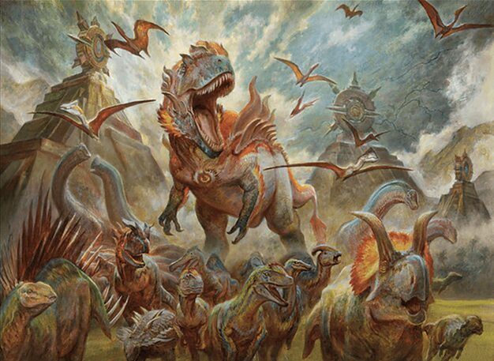 | 1683 | 42% | 321 (3) | €99.91 | Above average |
| 7 | 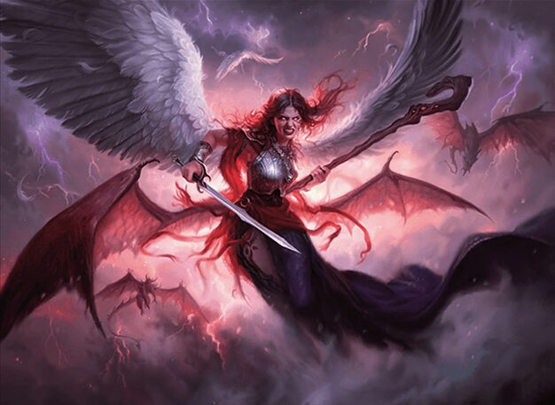 | 1683 | 41% | 321 (9) | €99.93 | Above average |
| 8 |  | 1677 | 41% | 321 (6) | €92.91 | Above average |
| 9 |  | 1672 | 40% | 321 (4) | €100.00 | Above average |
| 10 |  Sephiroth, Fabled SOLDIER // Sephiroth, One-Winged Angel win rate 39% · 320 (9) games · €99.79 Above average | 1669 | 39% | 320 (9) | €99.79 | Above average |
| 11 |  | 1652 | 38% | 321 (3) | €99.99 | Above average |
| 12 |  | 1647 | 38% | 320 (13) | €99.14 | Above average |
| 13 |  | 1639 | 36% | 321 (13) | €99.89 | Above average |
| 14 |  | 1628 | 35% | 322 (11) | €99.01 | Above average |
| 15 | 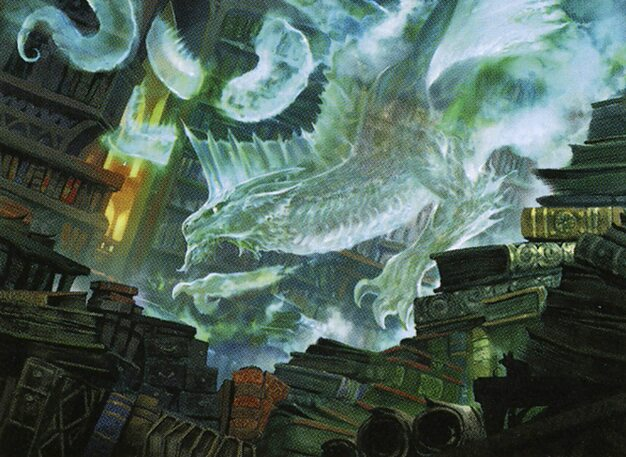 | 1616 | 34% | 321 (10) | €99.86 | Above average |
| 16 |  | 1594 | 31% | 320 (15) | €98.62 | Above average |
| 17 |  | 1592 | 32% | 320 (9) | €99.60 | Above average |
| 18 | 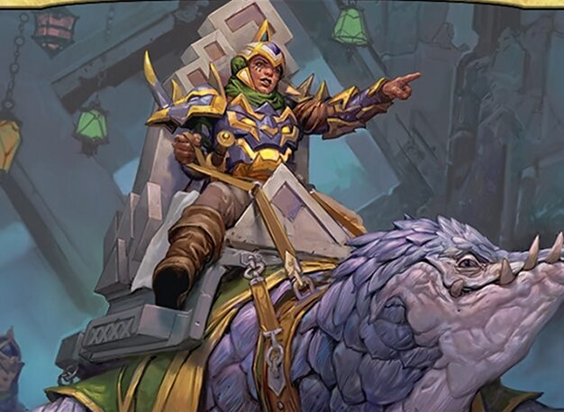 | 1583 | 33% | 91 | €99.40 | Undecided |
| 19 |  | 1580 | 29% | 320 (23) | €99.83 | Undecided |
| 20 | 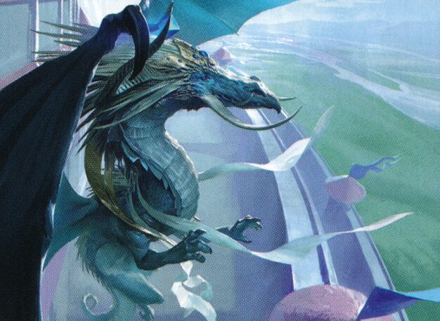 | 1571 | 29% | 321 (16) | €99.24 | Undecided |
| 21 |  | 1568 | 30% | 321 (6) | €99.38 | Above average |
| 22 |  | 1567 | 29% | 320 (14) | €99.52 | Undecided |
| 23 |  | 1555 | 28% | 320 (17) | €99.93 | Undecided |
| 24 |  | 1550 | 27% | 321 (9) | €99.96 | Undecided |
| 25 |  | 1541 | 25% | 320 (42) | €99.79 | Undecided |
| 26 |  | 1538 | 27% | 321 (25) | €99.99 | Undecided |
| 27 |  | 1532 | 27% | 320 (15) | €99.06 | Undecided |
| 28 |  | 1530 | 26% | 321 (5) | €99.95 | Undecided |
| 29 |  | 1528 | 26% | 322 (13) | €99.28 | Undecided |
| 30 |  | 1523 | 26% | 321 (10) | €99.06 | Undecided |
| 31 |  | 1521 | 25% | 320 (16) | €99.97 | Undecided |
| 32 |  | 1513 | 23% | 321 (11) | €99.95 | Undecided |
| 33 | 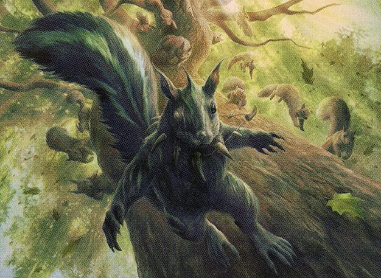 | 1507 | 25% | 320 (18) | €99.55 | Undecided |
| 34 | 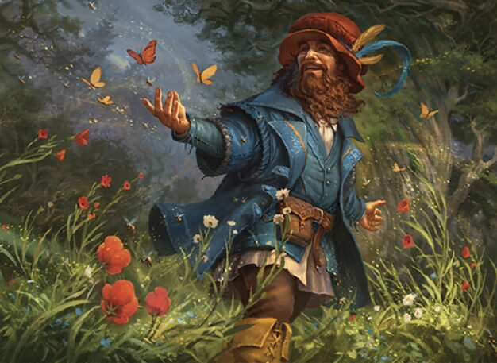 | 1491 | 23% | 320 (16) | €99.97 | Undecided |
| 35 |  | 1490 | 22% | 320 (15) | €99.81 | Undecided |
| 36 | 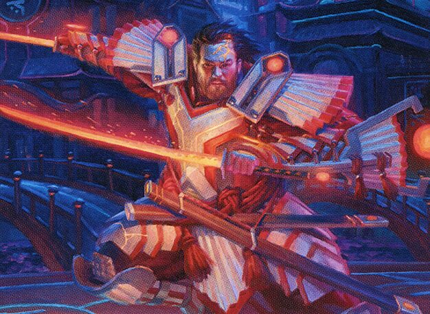 | 1482 | 21% | 320 (15) | €99.95 | Undecided |
| 37 | 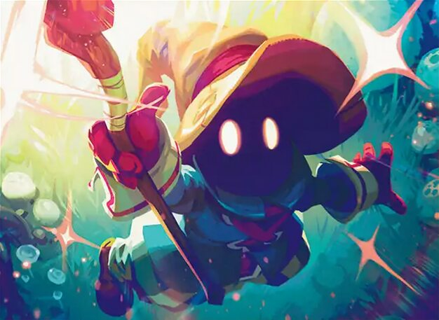 | 1476 | 21% | 322 (9) | €98.79 | Undecided |
| 38 |  | 1469 | 21% | 321 (24) | €97.61 | Undecided |
| 39 |  | 1469 | 21% | 322 (13) | €99.44 | Undecided |
| 40 | 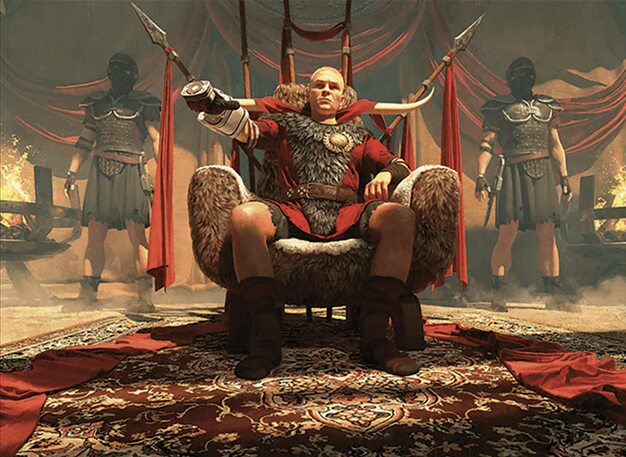 | 1463 | 20% | 321 (17) | €98.93 | Below average |
| 41 |  | 1458 | 19% | 321 (12) | €99.81 | Below average |
| 42 |  | 1454 | 19% | 320 (23) | €99.70 | Below average |
| 43 |  | 1448 | 18% | 320 (42) | €99.99 | Below average |
| 44 | 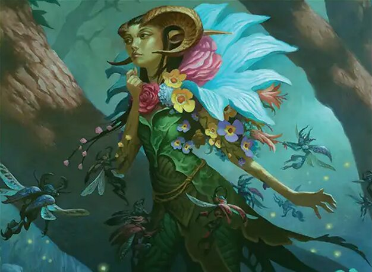 | 1447 | 19% | 321 (26) | €99.95 | Below average |
| 45 |  | 1445 | 19% | 320 (13) | €99.55 | Below average |
| 46 | 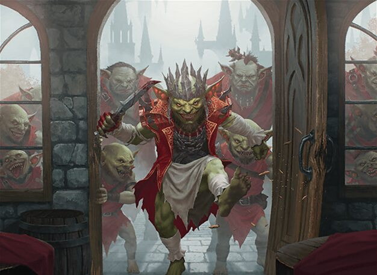 | 1436 | 18% | 321 (25) | €98.73 | Below average |
| 47 |  | 1433 | 19% | 320 (34) | €99.82 | Below average |
| 48 |  | 1430 | 17% | 321 (15) | €99.36 | Below average |
| 49 |  | 1417 | 17% | 321 (25) | €99.96 | Below average |
| 50 |  | 1405 | 15% | 320 (14) | €99.66 | Below average |
| 51 |  | 1396 | 15% | 320 (18) | €99.99 | Below average |
| 52 |  | 1385 | 15% | 321 (13) | €98.76 | Below average |
| 53 |  | 1384 | 15% | 320 (32) | €99.63 | Below average |
| 54 |  | 1358 | 13% | 322 (23) | €99.84 | Below average |
| 55 |  Frodo, Adventurous Hobbit // Sam, Loyal Attendant win rate 12% · 321 (33) games · €98.30 Below average | 1349 | 12% | 321 (33) | €98.30 | Below average |
| 56 |  | 1342 | 11% | 320 (21) | €100.00 | Below average |
| 57 |  | 1317 | 11% | 320 (13) | €98.56 | Below average |
| 58 | 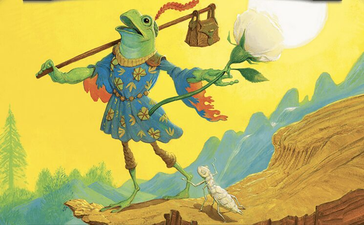 | 1315 | 11% | 321 (36) | €99.93 | Below average |
| 59 |  | 1291 | 9% | 320 (15) | €98.17 | Below average |
| 60 |  | 1262 | 7% | 320 (32) | €99.95 | Below average |
| 61 |  | 1255 | 7% | 322 (33) | €99.64 | Below average |
| 62 |  | 1222 | 6% | 322 (21) | €99.98 | Below average |
| 63 |  | 1217 | 6% | 320 (23) | €99.53 | Below average |
| 64 |  | 1082 | 3% | 322 (32) | €99.57 | Below average |
No longer in the field (dropped out of the EDHREC top, so not ranked): Arabella, Abandoned Doll (Elo 1465, 216 games)
The most successful decks up to €200 in the Forge simulation (Bracket 3: at most 3 Game Changers).
Oloro, Ageless Ascetic
Illustration: Valera Lutfullina · © Wizards of the CoastUreni of the Unwritten
Illustration: Mark Winters · © Wizards of the CoastNekusar, the Mindrazer
Rankings up to €200
from 31 tournaments| # | Commander | Elo | Win rate | Games | Price | Status |
|---|---|---|---|---|---|---|
| 1 | 1791 | 54% | 313 (10) | €199.94 | Above average | |
| 2 | | 1749 | 48% | 312 (6) | €197.77 | Above average |
| 3 | | 1741 | 47% | 311 (3) | €199.96 | Above average |
| 4 | | 1723 | 45% | 311 (11) | €199.26 | Above average |
| 5 | 1720 | 46% | 312 (7) | €199.53 | Above average | |
| 6 | 1712 | 43% | 311 (11) | €199.98 | Above average | |
| 7 | | 1698 | 42% | 310 (4) | €199.56 | Above average |
| 8 | | 1697 | 44% | 310 (7) | €193.90 | Above average |
| 9 | Sephiroth, Fabled SOLDIER // Sephiroth, One-Winged Angel win rate 42% · 311 (11) games · €199.84 Above average | 1694 | 42% | 311 (11) | €199.84 | Above average |
| 10 | | 1692 | 42% | 310 (2) | €198.21 | Above average |
| 11 | Kuja, Genome Sorcerer // Trance Kuja, Fate Defied win rate 41% · 310 (3) games · €197.47 Above average | 1689 | 41% | 310 (3) | €197.47 | Above average |
| 12 | | 1659 | 39% | 310 (11) | €198.71 | Above average |
| 13 | 1634 | 36% | 311 (5) | €199.99 | Above average | |
| 14 | | 1634 | 36% | 310 (9) | €198.39 | Above average |
| 15 | | 1628 | 34% | 311 (11) | €199.45 | Above average |
| 16 | | 1609 | 34% | 310 (15) | €199.60 | Above average |
| 17 | | 1600 | 32% | 311 (7) | €192.03 | Above average |
| 18 | | 1585 | 31% | 311 (44) | €199.66 | Above average |
| 19 | | 1578 | 29% | 312 (16) | €198.37 | Undecided |
| 20 | | 1574 | 29% | 310 (17) | €198.56 | Undecided |
| 21 | | 1571 | 29% | 311 (17) | €192.32 | Undecided |
| 22 | | 1564 | 30% | 310 (13) | €197.16 | Undecided |
| 23 | | 1563 | 28% | 311 (17) | €199.59 | Undecided |
| 24 | 1560 | 28% | 310 (12) | €199.25 | Undecided | |
| 25 | | 1555 | 27% | 311 (10) | €199.97 | Undecided |
| 26 | | 1537 | 25% | 310 (15) | €199.15 | Undecided |
| 27 | | 1533 | 26% | 311 (18) | €199.13 | Undecided |
| 28 | 1528 | 25% | 311 (31) | €199.73 | Undecided | |
| 29 | | 1513 | 24% | 311 (21) | €195.10 | Undecided |
| 30 | 1506 | 22% | 130 | €186.98 | Undecided | |
| 31 | 1505 | 23% | 310 (10) | €199.85 | Undecided | |
| 32 | | 1492 | 23% | 310 (18) | €197.45 | Undecided |
| 33 | | 1487 | 22% | 311 (19) | €199.95 | Undecided |
| 34 | | 1482 | 22% | 310 (28) | €197.81 | Undecided |
| 35 | | 1479 | 22% | 310 (22) | €198.86 | Undecided |
| 36 | | 1477 | 21% | 310 (20) | €196.02 | Undecided |
| 37 | | 1466 | 19% | 310 (11) | €199.93 | Below average |
| 38 | | 1462 | 21% | 311 (35) | €199.11 | Undecided |
| 39 | 1461 | 20% | 313 (19) | €197.80 | Below average | |
| 40 | 1460 | 20% | 312 (21) | €196.20 | Below average | |
| 41 | | 1452 | 20% | 310 (20) | €199.75 | Below average |
| 42 | | 1441 | 18% | 310 (23) | €199.98 | Below average |
| 43 | | 1439 | 18% | 310 (21) | €199.78 | Below average |
| 44 | | 1438 | 19% | 310 (15) | €197.85 | Below average |
| 45 | | 1419 | 17% | 313 (30) | €199.32 | Below average |
| 46 | 1418 | 17% | 312 (12) | €199.31 | Below average | |
| 47 | | 1416 | 16% | 310 (19) | €198.12 | Below average |
| 48 | | 1412 | 15% | 311 (27) | €199.23 | Below average |
| 49 | | 1395 | 15% | 310 (11) | €199.43 | Below average |
| 50 | | 1387 | 14% | 311 (15) | €199.83 | Below average |
| 51 | 1386 | 14% | 310 (31) | €198.95 | Below average | |
| 52 | | 1361 | 12% | 311 (22) | €182.06 | Below average |
| 53 | | 1355 | 13% | 311 (14) | €198.50 | Below average |
| 54 | | 1344 | 11% | 310 (36) | €199.19 | Below average |
| 55 | | 1334 | 11% | 310 (22) | €197.94 | Below average |
| 56 | Frodo, Adventurous Hobbit // Sam, Loyal Attendant win rate 11% · 311 (35) games · €198.27 Below average | 1330 | 11% | 311 (35) | €198.27 | Below average |
| 57 | 1319 | 11% | 311 (26) | €199.40 | Below average | |
| 58 | | 1305 | 10% | 312 (17) | €199.42 | Below average |
| 59 | | 1297 | 9% | 310 (24) | €199.77 | Below average |
| 60 | 1257 | 8% | 310 (25) | €198.06 | Below average | |
| 61 | | 1246 | 7% | 311 (47) | €197.48 | Below average |
| 62 | | 1222 | 7% | 310 (38) | €199.94 | Below average |
| 63 | | 1205 | 6% | 310 (23) | €198.77 | Below average |
| 64 | | 1203 | 6% | 310 (29) | €199.97 | Below average |
No longer in the field (dropped out of the EDHREC top, so not ranked): Arabella, Abandoned Doll (Elo 1510, 165 games)
The most successful decks up to €300 in the Forge simulation (Bracket 3: at most 3 Game Changers).
Oloro, Ageless Ascetic
Illustration: Chris Cold · © Wizards of the CoastValgavoth, Harrower of Souls
Gishath, Sun's Avatar
Rankings up to €300
from 10 tournaments| # | Commander | Elo | Win rate | Games | Price | Status |
|---|---|---|---|---|---|---|
| 1 | 1865 | 64% | 103 | €298.90 | Above average | |
| 2 | | 1776 | 53% | 102 | €291.97 | Above average |
| 3 | 1764 | 50% | 101 | €299.84 | Above average | |
| 4 | | 1754 | 49% | 101 | €289.91 | Above average |
| 5 | | 1751 | 49% | 100 (1) | €295.51 | Above average |
| 6 | | 1746 | 48% | 101 | €299.50 | Above average |
| 7 | | 1712 | 43% | 100 | €297.49 | Above average |
| 8 | 1701 | 42% | 100 | €299.23 | Above average | |
| 9 | | 1697 | 42% | 103 | €299.91 | Above average |
| 10 | | 1694 | 43% | 100 | €298.46 | Above average |
| 11 | Sephiroth, Fabled SOLDIER // Sephiroth, One-Winged Angel win rate 41% · 100 games · €299.51 Above average | 1688 | 41% | 100 | €299.51 | Above average |
| 12 | 1679 | 42% | 102 | €298.98 | Above average | |
| 13 | | 1661 | 40% | 100 | €299.45 | Above average |
| 14 | | 1643 | 35% | 100 | €296.97 | Above average |
| 15 | | 1642 | 37% | 100 | €292.93 | Above average |
| 16 | | 1628 | 36% | 102 (7) | €298.78 | Above average |
| 17 | | 1624 | 35% | 100 | €299.37 | Above average |
| 18 | | 1598 | 31% | 101 (2) | €298.00 | Undecided |
| 19 | | 1564 | 31% | 101 | €299.71 | Undecided |
| 20 | | 1560 | 26% | 100 (1) | €293.36 | Undecided |
| 21 | | 1555 | 26% | 100 | €295.55 | Undecided |
| 22 | | 1551 | 28% | 100 | €298.32 | Undecided |
| 23 | | 1534 | 26% | 101 (2) | €284.98 | Undecided |
| 24 | | 1528 | 24% | 100 | €297.87 | Undecided |
| 25 | | 1525 | 24% | 101 | €297.33 | Undecided |
| 26 | | 1523 | 24% | 101 | €299.82 | Undecided |
| 27 | 1519 | 26% | 100 (1) | €296.35 | Undecided | |
| 28 | 1517 | 24% | 100 (2) | €286.36 | Undecided | |
| 29 | 1513 | 25% | 100 | €299.48 | Undecided | |
| 30 | | 1507 | 23% | 102 (1) | €298.94 | Undecided |
| 31 | | 1506 | 24% | 100 (2) | €252.15 | Undecided |
| 32 | | 1502 | 25% | 100 | €298.40 | Undecided |
| 33 | | 1498 | 24% | 100 (1) | €299.63 | Undecided |
| 34 | | 1493 | 21% | 100 (2) | €299.63 | Undecided |
| 35 | | 1491 | 21% | 102 (4) | €299.84 | Undecided |
| 36 | 1470 | 20% | 100 (1) | €298.27 | Undecided | |
| 37 | | 1466 | 21% | 100 (1) | €299.75 | Undecided |
| 38 | | 1466 | 19% | 100 (2) | €297.86 | Undecided |
| 39 | | 1461 | 17% | 100 | €299.55 | Undecided |
| 40 | 1448 | 19% | 100 (2) | €298.80 | Undecided | |
| 41 | 1433 | 17% | 100 (1) | €298.85 | Undecided | |
| 42 | | 1431 | 16% | 100 (3) | €299.05 | Undecided |
| 43 | | 1430 | 19% | 102 | €299.58 | Undecided |
| 44 | | 1428 | 17% | 101 | €297.97 | Undecided |
| 45 | | 1425 | 17% | 100 (1) | €299.78 | Undecided |
| 46 | 1425 | 17% | 101 (1) | €298.13 | Undecided | |
| 47 | | 1411 | 15% | 100 | €299.64 | Below average |
| 48 | 1406 | 15% | 100 (3) | €186.98 | Below average | |
| 49 | | 1406 | 15% | 100 (2) | €272.83 | Below average |
| 50 | | 1397 | 16% | 101 | €296.90 | Below average |
| 51 | | 1379 | 14% | 100 | €294.89 | Below average |
| 52 | | 1354 | 12% | 101 (2) | €296.57 | Below average |
| 53 | | 1350 | 12% | 100 | €296.91 | Below average |
| 54 | | 1347 | 12% | 100 (2) | €297.75 | Below average |
| 55 | | 1311 | 9% | 100 (8) | €299.83 | Below average |
| 56 | | 1301 | 10% | 100 (2) | €299.91 | Below average |
| 57 | | 1285 | 8% | 100 (3) | €298.77 | Below average |
| 58 | | 1259 | 7% | 100 (5) | €298.24 | Below average |
| 59 | | 1257 | 8% | 100 (2) | €299.92 | Below average |
| 60 | | 1256 | 7% | 100 (5) | €299.88 | Below average |
| 61 | 1245 | 6% | 100 (3) | €296.33 | Below average | |
| 62 | Frodo, Adventurous Hobbit // Sam, Loyal Attendant win rate 7% · 101 (3) games · €278.45 Below average | 1244 | 7% | 101 (3) | €278.45 | Below average |
| 63 | 1235 | 6% | 101 (1) | €299.84 | Below average | |
| 64 | | 1166 | 4% | 100 (5) | €299.85 | Below average |
The most successful decks up to €400 in the Forge simulation (Bracket 3: at most 3 Game Changers).
Oloro, Ageless Ascetic
Illustration: Valera Lutfullina · © Wizards of the CoastUreni of the Unwritten
Illustration: Mark Winters · © Wizards of the CoastNekusar, the Mindrazer
Rankings up to €400
from 6 tournaments| # | Commander | Elo | Win rate | Games | Price | Status |
|---|---|---|---|---|---|---|
| 1 | 1874 | 68% | 60 | €398.19 | Above average | |
| 2 | | 1764 | 52% | 61 | €388.28 | Above average |
| 3 | | 1744 | 48% | 60 | €399.61 | Above average |
| 4 | 1736 | 45% | 60 | €392.08 | Above average | |
| 5 | | 1728 | 48% | 61 | €397.13 | Above average |
| 6 | | 1727 | 49% | 60 (1) | €397.77 | Above average |
| 7 | | 1714 | 44% | 60 (1) | €398.50 | Above average |
| 8 | Sephiroth, Fabled SOLDIER // Sephiroth, One-Winged Angel win rate 45% · 60 games · €399.93 Above average | 1705 | 45% | 60 | €399.93 | Above average |
| 9 | | 1686 | 43% | 61 | €399.91 | Above average |
| 10 | 1665 | 37% | 60 (1) | €396.56 | Above average | |
| 11 | | 1660 | 41% | 61 | €395.49 | Above average |
| 12 | | 1644 | 36% | 60 (1) | €398.97 | Undecided |
| 13 | 1643 | 37% | 60 | €399.83 | Above average | |
| 14 | | 1626 | 35% | 60 | €391.67 | Undecided |
| 15 | | 1616 | 35% | 60 | €391.58 | Undecided |
| 16 | | 1615 | 32% | 60 | €399.10 | Undecided |
| 17 | 1608 | 33% | 60 | €397.10 | Undecided | |
| 18 | | 1598 | 32% | 60 (1) | €374.34 | Undecided |
| 19 | | 1592 | 30% | 61 (1) | €398.99 | Undecided |
| 20 | | 1568 | 28% | 60 | €399.87 | Undecided |
| 21 | | 1551 | 28% | 60 | €395.69 | Undecided |
| 22 | | 1549 | 28% | 60 | €397.16 | Undecided |
| 23 | | 1546 | 32% | 61 (2) | €390.57 | Undecided |
| 24 | | 1531 | 25% | 60 | €327.28 | Undecided |
| 25 | | 1523 | 26% | 60 (1) | €395.83 | Undecided |
| 26 | | 1520 | 25% | 61 (1) | €399.70 | Undecided |
| 27 | | 1519 | 23% | 60 | €349.75 | Undecided |
| 28 | 1509 | 25% | 61 | €398.29 | Undecided | |
| 29 | | 1498 | 23% | 61 | €252.15 | Undecided |
| 30 | | 1490 | 22% | 60 (2) | €399.11 | Undecided |
| 31 | | 1487 | 22% | 60 | €399.50 | Undecided |
| 32 | 1483 | 22% | 60 | €396.97 | Undecided | |
| 33 | | 1482 | 20% | 60 (1) | €399.06 | Undecided |
| 34 | | 1480 | 23% | 61 (1) | €398.75 | Undecided |
| 35 | | 1473 | 20% | 60 | €398.71 | Undecided |
| 36 | | 1464 | 20% | 60 | €399.88 | Undecided |
| 37 | 1463 | 20% | 60 | €173.27 | Undecided | |
| 38 | | 1460 | 20% | 61 (1) | €398.73 | Undecided |
| 39 | 1457 | 20% | 60 (1) | €398.93 | Undecided | |
| 40 | | 1455 | 20% | 60 (1) | €399.59 | Undecided |
| 41 | | 1451 | 22% | 61 (1) | €396.69 | Undecided |
| 42 | | 1450 | 20% | 60 (1) | €399.56 | Undecided |
| 43 | | 1441 | 20% | 60 | €341.32 | Undecided |
| 44 | | 1439 | 18% | 60 | €399.41 | Undecided |
| 45 | | 1436 | 18% | 61 | €399.21 | Undecided |
| 46 | | 1416 | 15% | 60 | €399.98 | Undecided |
| 47 | | 1414 | 15% | 60 (1) | €399.95 | Undecided |
| 48 | | 1406 | 17% | 61 (1) | €399.55 | Undecided |
| 49 | | 1396 | 16% | 60 (2) | €399.87 | Undecided |
| 50 | 1391 | 13% | 61 | €398.67 | Below average | |
| 51 | | 1372 | 15% | 61 (1) | €373.98 | Undecided |
| 52 | 1363 | 13% | 60 | €396.61 | Below average | |
| 53 | | 1363 | 13% | 61 (1) | €399.88 | Below average |
| 54 | | 1355 | 12% | 61 | €334.33 | Below average |
| 55 | | 1351 | 12% | 60 (1) | €396.48 | Below average |
| 56 | 1348 | 12% | 61 | €398.71 | Below average | |
| 57 | 1341 | 10% | 60 (1) | €399.26 | Below average | |
| 58 | | 1291 | 9% | 60 (2) | €399.59 | Below average |
| 59 | | 1290 | 9% | 60 (2) | €399.57 | Below average |
| 60 | | 1289 | 9% | 60 (2) | €399.41 | Below average |
| 61 | | 1265 | 8% | 61 | €379.17 | Below average |
| 62 | 1253 | 7% | 60 (2) | €399.12 | Below average | |
| 63 | | 1248 | 7% | 60 | €399.97 | Below average |
| 64 | | 1178 | 4% | 60 (1) | €399.73 | Below average |
The most successful decks up to €500 in the Forge simulation (Bracket 3: at most 3 Game Changers).
Oloro, Ageless Ascetic
Illustration: Mark Winters · © Wizards of the CoastNekusar, the Mindrazer
Illustration: Kai Carpenter · © Wizards of the CoastGiada, Font of Hope
Rankings up to €500
from 26 tournaments| # | Commander | Elo | Win rate | Games | Price | Status |
|---|---|---|---|---|---|---|
| 1 | 1801 | 54% | 260 (11) | €497.52 | Above average | |
| 2 | | 1767 | 50% | 260 (9) | €498.33 | Above average |
| 3 | | 1762 | 49% | 260 (27) | €499.92 | Above average |
| 4 | | 1761 | 49% | 260 (25) | €496.19 | Above average |
| 5 | 1747 | 47% | 260 (16) | €499.45 | Above average | |
| 6 | | 1728 | 45% | 260 (25) | €481.86 | Above average |
| 7 | Kuja, Genome Sorcerer // Trance Kuja, Fate Defied win rate 43% · 260 (9) games · €495.75 Above average | 1722 | 43% | 260 (9) | €495.75 | Above average |
| 8 | 1700 | 41% | 260 (33) | €483.63 | Above average | |
| 9 | Sephiroth, Fabled SOLDIER // Sephiroth, One-Winged Angel win rate 40% · 260 (28) games · €499.81 Above average | 1682 | 40% | 260 (28) | €499.81 | Above average |
| 10 | | 1678 | 39% | 260 (6) | €492.35 | Above average |
| 11 | | 1669 | 38% | 260 (26) | €497.53 | Above average |
| 12 | | 1664 | 38% | 260 (27) | €499.43 | Above average |
| 13 | | 1655 | 37% | 260 (28) | €499.94 | Above average |
| 14 | | 1651 | 37% | 260 (29) | €464.80 | Above average |
| 15 | | 1645 | 37% | 260 (42) | €499.15 | Above average |
| 16 | 1625 | 34% | 260 (26) | €499.17 | Above average | |
| 17 | | 1609 | 31% | 260 (81) | €490.84 | Undecided |
| 18 | | 1607 | 32% | 260 (33) | €490.79 | Above average |
| 19 | | 1603 | 31% | 260 (49) | €480.97 | Above average |
| 20 | | 1598 | 31% | 260 (24) | €417.31 | Above average |
| 21 | | 1592 | 31% | 260 (50) | €452.68 | Above average |
| 22 | 1567 | 27% | 260 (38) | €352.15 | Undecided | |
| 23 | | 1549 | 26% | 260 (44) | €493.13 | Undecided |
| 24 | | 1539 | 26% | 260 (47) | €498.57 | Undecided |
| 25 | | 1535 | 26% | 260 (35) | €346.89 | Undecided |
| 26 | | 1534 | 25% | 260 (46) | €462.48 | Undecided |
| 27 | | 1527 | 24% | 260 (41) | €497.68 | Undecided |
| 28 | 1525 | 25% | 260 (48) | €491.93 | Undecided | |
| 29 | | 1519 | 24% | 260 (53) | €492.52 | Undecided |
| 30 | | 1515 | 23% | 260 (51) | €497.66 | Undecided |
| 31 | 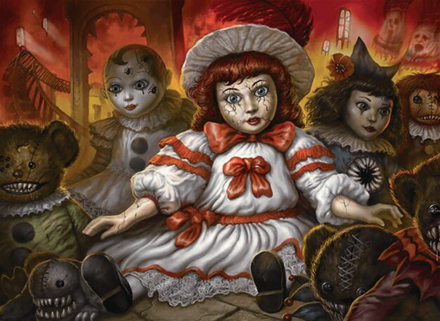 | 1509 | 24% | 260 (40) | €499.64 | Undecided |
| 32 | | 1508 | 22% | 260 (41) | €492.47 | Undecided |
| 33 | 1496 | 22% | 260 (30) | €488.25 | Undecided | |
| 34 | | 1487 | 22% | 260 (53) | €497.17 | Undecided |
| 35 | | 1486 | 22% | 260 (26) | €495.26 | Undecided |
| 36 | | 1483 | 21% | 260 (52) | €252.15 | Undecided |
| 37 | | 1476 | 21% | 260 (43) | €352.30 | Undecided |
| 38 | | 1475 | 19% | 260 (53) | €498.10 | Below average |
| 39 | | 1460 | 20% | 260 (51) | €436.91 | Undecided |
| 40 | | 1437 | 18% | 260 (19) | €493.71 | Below average |
| 41 | | 1432 | 16% | 260 (52) | €483.00 | Below average |
| 42 | | 1428 | 17% | 260 (54) | €342.84 | Below average |
| 43 | | 1427 | 15% | 260 (56) | €412.82 | Below average |
| 44 | 1417 | 15% | 260 (58) | €496.69 | Below average | |
| 45 | | 1411 | 16% | 260 (54) | €497.04 | Below average |
| 46 | 1409 | 15% | 260 (53) | €484.24 | Below average | |
| 47 | 1407 | 16% | 260 (44) | €490.81 | Below average | |
| 48 | | 1404 | 15% | 260 (46) | €499.68 | Below average |
| 49 | 1382 | 14% | 260 (26) | €496.87 | Below average | |
| 50 | | 1378 | 14% | 260 (39) | €499.15 | Below average |
| 51 | | 1377 | 14% | 260 (47) | €478.87 | Below average |
| 52 | | 1376 | 13% | 260 (39) | €493.54 | Below average |
| 53 | | 1370 | 12% | 260 (49) | €334.33 | Below average |
| 54 | | 1369 | 13% | 260 (34) | €494.36 | Below average |
| 55 | Frodo, Adventurous Hobbit // Sam, Loyal Attendant win rate 10% · 260 (73) games · €418.91 Below average | 1331 | 10% | 260 (73) | €418.91 | Below average |
| 56 | | 1319 | 10% | 260 (55) | €495.45 | Below average |
| 57 | 1319 | 10% | 260 (62) | €499.55 | Below average | |
| 58 | | 1292 | 8% | 260 (75) | €490.59 | Below average |
| 59 | | 1285 | 8% | 260 (84) | €497.38 | Below average |
| 60 | | 1264 | 7% | 260 (59) | €499.57 | Below average |
| 61 | | 1228 | 6% | 260 (57) | €497.88 | Below average |
| 62 | 1168 | 4% | 260 (83) | €497.64 | Below average | |
| 63 | | 1168 | 4% | 260 (95) | €499.08 | Below average |
| 64 | | 1148 | 4% | 260 (75) | €499.44 | Below average |
Latest tournament:
up to €400, 64 Decks| # | Commander | Win rate | Wins / games | Performance | Status |
|---|---|---|---|---|---|
| 1 | | 70% | 7 / 10 | 2.55 | Above average |
| 2 | 70% | 7 / 10 | 2.52 | Above average | |
| 3 | | 60% | 6 / 10 | 2.15 | Above average |
| 4 | | 56% | 5 / 9 | 2.07 | Above average |
| 5 | | 50% | 5 / 10 | 2.03 | Undecided |
| 6 | | 56% | 5 / 9 | 1.96 | Above average |
| 7 | | 50% | 5 / 10 | 1.80 | Undecided |
| 8 | | 44% | 4 / 9 | 1.66 | Undecided |
| 9 | | 40% | 4 / 10 | 1.62 | Undecided |
| 10 | | 40% | 4 / 10 | 1.57 | Undecided |
| 11 | | 40% | 4 / 10 | 1.55 | Undecided |
| 12 | | 44% | 4 / 9 | 1.54 | Undecided |
| 13 | 40% | 4 / 10 | 1.52 | Undecided | |
| 14 | | 44% | 4 / 9 | 1.48 | Undecided |
| 15 | 36% | 4 / 11 | 1.46 | Undecided | |
| 16 | | 30% | 3 / 10 | 1.35 | Undecided |
| 17 | | 30% | 3 / 10 | 1.34 | Undecided |
| 18 | | 33% | 3 / 9 | 1.34 | Undecided |
| 19 | 30% | 3 / 10 | 1.33 | Undecided | |
| 20 | | 38% | 3 / 8 | 1.31 | Undecided |
| 21 | | 30% | 3 / 10 | 1.29 | Undecided |
| 22 | | 33% | 3 / 9 | 1.29 | Undecided |
| 23 | | 30% | 3 / 10 | 1.27 | Undecided |
| 24 | | 30% | 3 / 10 | 1.25 | Undecided |
| 25 | 30% | 3 / 10 | 1.23 | Undecided | |
| 26 | | 33% | 3 / 9 | 1.20 | Undecided |
| 27 | | 30% | 3 / 10 | 1.17 | Undecided |
| 28 | | 30% | 3 / 10 | 1.16 | Undecided |
| 29 | | 30% | 3 / 10 | 1.15 | Undecided |
| 30 | | 30% | 3 / 10 | 1.11 | Undecided |
| 31 | | 25% | 2 / 8 | 1.09 | Undecided |
| 32 | 27% | 3 / 11 | 1.05 | Undecided | |
| 33 | 20% | 2 / 10 | 1.04 | Undecided | |
| 34 | 20% | 2 / 10 | 0.95 | Undecided | |
| 35 | | 20% | 2 / 10 | 0.93 | Undecided |
| 36 | | 20% | 2 / 10 | 0.92 | Undecided |
| 37 | | 20% | 2 / 10 | 0.90 | Undecided |
| 38 | | 22% | 2 / 9 | 0.88 | Undecided |
| 39 | | 20% | 2 / 10 | 0.87 | Undecided |
| 40 | 20% | 2 / 10 | 0.85 | Undecided | |
| 41 | | 20% | 2 / 10 | 0.84 | Undecided |
| 42 | | 20% | 2 / 10 | 0.82 | Undecided |
| 43 | | 20% | 2 / 10 | 0.81 | Undecided |
| 44 | 11% | 1 / 9 | 0.71 | Undecided | |
| 45 | | 11% | 1 / 9 | 0.69 | Undecided |
| 46 | | 11% | 1 / 9 | 0.66 | Undecided |
| 47 | 10% | 1 / 10 | 0.63 | Undecided | |
| 48 | 10% | 1 / 10 | 0.63 | Undecided | |
| 49 | | 11% | 1 / 9 | 0.62 | Undecided |
| 50 | | 10% | 1 / 10 | 0.60 | Undecided |
| 51 | | 10% | 1 / 10 | 0.60 | Undecided |
| 52 | | 9% | 1 / 11 | 0.59 | Undecided |
| 53 | | 10% | 1 / 10 | 0.56 | Undecided |
| 54 | 9% | 1 / 11 | 0.56 | Undecided | |
| 55 | | 10% | 1 / 10 | 0.56 | Undecided |
| 56 | | 0% | 0 / 9 | 0.44 | Undecided |
| 57 | 0% | 0 / 10 | 0.42 | Undecided | |
| 58 | | 0% | 0 / 9 | 0.42 | Undecided |
| 59 | | 0% | 0 / 10 | 0.41 | Undecided |
| 60 | | 0% | 0 / 10 | 0.41 | Undecided |
| 61 | | 0% | 0 / 9 | 0.40 | Undecided |
| 62 | | 0% | 0 / 10 | 0.38 | Undecided |
| 63 | | 0% | 0 / 10 | 0.37 | Undecided |
| 64 | | 0% | 0 / 10 | 0.37 | Undecided |
Get involved
- Support on Ko-fiEvery support unlocks deck requests for 31 days, a monthly membership permanently.
- Use the same email or nameIn the form as on Ko-fi – that is how we recognise you.
- Result by emailIf we can’t find your support, you get a short note on how to fix it.
Request a deck
For supportersTell us your commander and budget – we build and test the deck and email it to you with a shopping list.
It only appears on this site if you agree. The form is in German, answers in English are fine. Learn more
Test your own deck
Beta · freeYour deck plays 120 games against ranked decks in the same budget. You get its win rate, place in the test field, strengths and weaknesses by email.
Moxfield or Archidekt link (public deck) or the list as text. Free during the beta, one deck per week – supporters more often and with priority. Results via private link. Learn more
Support the project
Everything here stays free. Your support pays for more games, new features and the tech.
Unlocks deck requests and gives your own deck tests priority.
Tested on request
| Commander | Budget | Wins / games | Price | Date |
|---|---|---|---|---|
| up to €220 | 7 / 14 | €219.46 | 24.10.2026 | |
| up to €300 | 1 / 14 | €288.22 | 18.10.2026 |
Questions and answers
What is CommanderTestLabor?
Budget Commander decks battle each other – not at the kitchen table, but in the Forge simulator, piloted by the Forge AI. 68 decks per price class: the 64 most-played commanders on EDHREC and 4 official precons as a benchmark. They play four-player games, each deck about 10 games per tournament in a Swiss system. 105 tournaments so far, new ones run almost daily.
The goal: show which commanders win the most on a small budget – with ready-made shopping lists to build them. The site is free, ad-free and a private hobby project.
How are the rankings sorted?
What it measures: how successful a deck is under identical conditions in Forge – not which deck is best for every playgroup. Matchups, politics and the AI's limits all play a part.
By Elo rating, like in chess. Every commander starts at 1500. The winner takes points from the three opponents, losers give some up. Beating strong opponents earns more than beating weak ones. Rule of thumb: 1600+ is clearly above average, 1750+ is top tier, below 1400 clearly below.
Why not just the win rate? In a Swiss system strong decks face strong opponents more often – Elo accounts for that. The win rate is still shown: games won divided by scored games. At a four-player table 25% is average.
Why do precons play? Four official precons play unchanged in every tournament and every price class. They are a fixed benchmark: the built decks change all the time, the precons never do. That shows how much stronger a built deck is than one you buy ready-made – and how much a bigger budget helps. Precons doing worse up to €200 and €500 than up to €100 is intended: that gap shows what the extra money is worth.
The precons are not in the rankings (those show only the 64 commanders) but below them under “Benchmark”, with the rank they would have. Their games count normally: beating a precon earns little Elo, because it counts as a weaker opponent.
Games “260 (18)” means: 260 played, 18 of them stopped at the time limit. Those count neither as a win nor as a loss and are replayed up to three times.
In detail: every game counts as three head-to-heads of the winner against the losers, so a win weighs three times as much as a loss – a deck that wins one game in four against equally strong opponents sits at 1500. Ratings are calculated from all games at once: every game counts the same, old or new, so a lucky streak in the latest tournaments can't upend the rankings. Seats are assigned at random.
Does the AI play like a human?
No – that is the biggest caveat. The Forge AI can't play 2,523 cards at all; in tournaments they are replaced by similar cards but stay on the shopping list. Another 2,100 it plays only partially well. Decks built on politics, bluffing or tricky combos tend to do worse than at a real table. The rankings are a good guide, not a final verdict.
Where do the decks come from?
From the decklists of thousands of players on EDHREC. The deck builder builds as strong a deck as possible that fits the budget and makes sure there is enough ramp, card draw, removal, board wipes and protection. After that it learns from every Forge game. 100 cards, color identity and the official banlist are always checked.
What counts towards the budget?
All 100 cards including the commander, at the Cardmarket average price (updated daily). That's why prices are in euros; in the US (TCGplayer) some cards cost noticeably more or less. The limit is hard: a deck “up to €400” costs at most €400. If prices rise later, the shopping list is rebuilt automatically.
How do I build a deck?
Every deck page has a shopping list for Cardmarket at the bottom: copy the list, create a new list under “Wants” on Cardmarket and paste it. The “1 Card name” format also works for importing into Moxfield or Archidekt.
The list is exactly the version that played in the tournament – the most successful one tested. Cards the Forge AI can't play were replaced there; the originals are listed under “Adjusted for the Forge AI”, where you can also copy the list with original cards.
Why is my commander missing?
The 64 most-played commanders on EDHREC are tested, so every tournament has enough strong and well-known opponents. If EDHREC's list changes, a new commander moves up; those who drop out are listed under the rankings as “No longer in the field”. If yours is missing, you can have your own list tested (free during the beta) or, as a supporter, a requested deck.
How strong are the decks?
Up to €400: at most 3 Game Changers (Bracket 3). Game Changers are especially powerful cards from the official Wizards of the Coast list. Combos are allowed; the official banlist applies. Other bracket guidelines (such as no early two-card combos) are not checked by the deck builder.
What does “Above average” mean?
Above or Below average: with 95% confidence stronger or weaker than an average deck, which wins 25% at a four-player table. Undecided: not enough games yet.
Where do strengths and weaknesses come from?
From Forge's game logs. Every game is read: how much damage each card dealt, who eliminated whom, who blocked what, lands, mulligans and spells cast. Each deck is then compared with all decks in the same price class.
It is also checked which opponents a deck struggles against: many flyers, counterspells, board wipes, removal, graveyard hate or artifact/enchantment removal. Only a very clear difference (99% confidence) is shown. If there is no certain weakness, the clearest trend is shown – explicitly marked as “not yet certain”.
Logged: recorded like that in the log. Indication: a recurring pattern, but no proof – a card that only comes down in games already won looks good too.
The card lists on each deck page: Damage per game (across all games), Damage when used (only games in which the card hit), Top finishers (eliminates opponents most often), Best interaction (destroys, exiles or counters the most), Biggest walls (opposing cards that block most often), Rarely cast (candidates to cut) and Wins by turn.
Why do the decks change?
The program learns from every game. In each tournament every deck tries out one card. If it wins more often, the card stays and shows up more often in the future; otherwise it is dropped. The same swap is only retried after three weeks. The shopping list only includes a test once it has proven itself.
Can I request a deck?
Yes, as a supporter on Ko-fi: name a commander and a budget, for example Kaalia up to €250. Then this happens:
- Build: exactly like the tournament decks – from the EDHREC lists, with Cardmarket prices, never above your budget, with at most 3 Game Changers for limited budgets.
- Optimize (about 3 hours): the deck plays in Forge against 8 commanders from the rankings, from strong to weak. Each round tests up to 6 versions with swapped cards, 14 games each. Whatever wins more often stays.
- Confirm: the starting deck and the improved deck play 42 more games each. Only what is confirmed stays in.
- Deliver: decklist, shopping list and win rate arrive by email. The deck only appears on this site if you agree.
Requested decks don't play in the rankings, but their win rate can roughly be compared with the 25% average.
Can I have my own deck tested? (New)
Yes – free during the beta, one deck per week (supporters more often and with priority). This option is new and not fully polished yet. Here's how it works:
- Submit: in the “Test your own deck” form enter your commander, decklist and email – as a link to a public Moxfield or Archidekt deck or as text (one card per line, for example exported from Moxfield, Archidekt or Cardmarket).
- Check: 100 cards, color identity and the banlist are checked, the price comes from Cardmarket. If something is wrong, you get an email listing the problems.
- Measure (a few hours): your deck plays 120 games in Forge against 10 commanders from the rankings, from the very top to the bottom like in a tournament – each with a deck in the same budget as yours. That is about as many games as a deck plays in 12 tournaments, so luck doesn't decide the result.
- Results by email: win rate with a confidence range, its place in the test field and the same numbers as on the deck pages: how often and when your commander came down, what dealt the most damage, which cards finished games, who knocked you out, strengths and weaknesses compared with the opponents in the same games, plus cards that rarely came into play.
Your deck does not appear in the rankings. You get the results by email, plus a private link to a page with charts – not linked anywhere, not in search engines. Cards the AI can't play are replaced by similar ones in testing – the results say which.
Was AI used? (AI disclosure)
Yes, for programming. The code behind this site – deck builder, tournament program and website – was largely written with AI assistance (Claude by Anthropic). I review and test it and decide what gets built.
The content is not AI-generated: rankings, win rates and stats come from real games in the Forge simulator, texts such as strengths and weaknesses are produced by fixed rules from that data. There are no AI-generated images – card images come from Scryfall. “Forge AI” on this site only means the computer opponent in Forge that plays the cards.
How current is the data?
Prices and EDHREC data are loaded daily, combos (Commander Spellbook) weekly, card data (Scryfall) every 30 days. The site is rebuilt after every tournament, so several times a day.